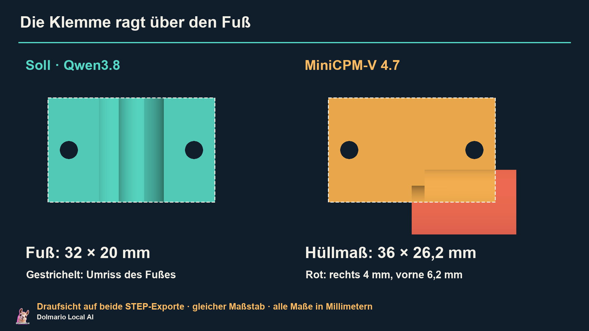
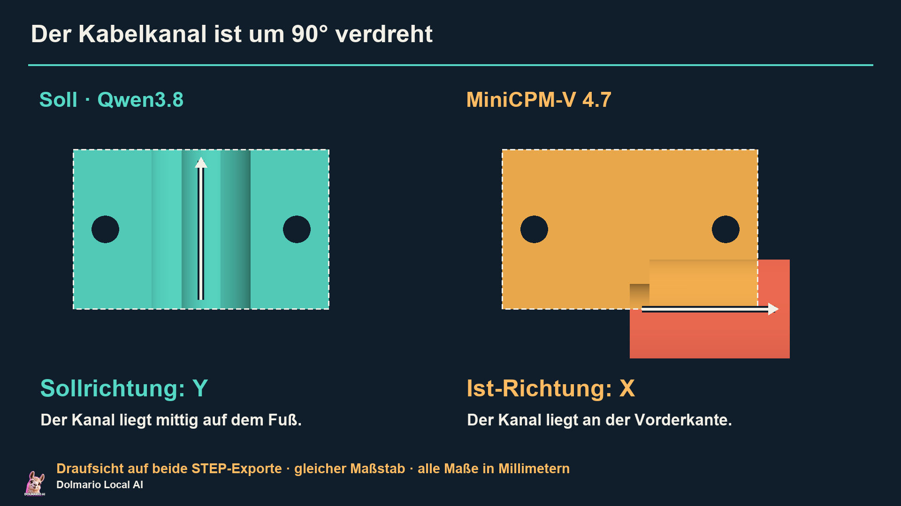
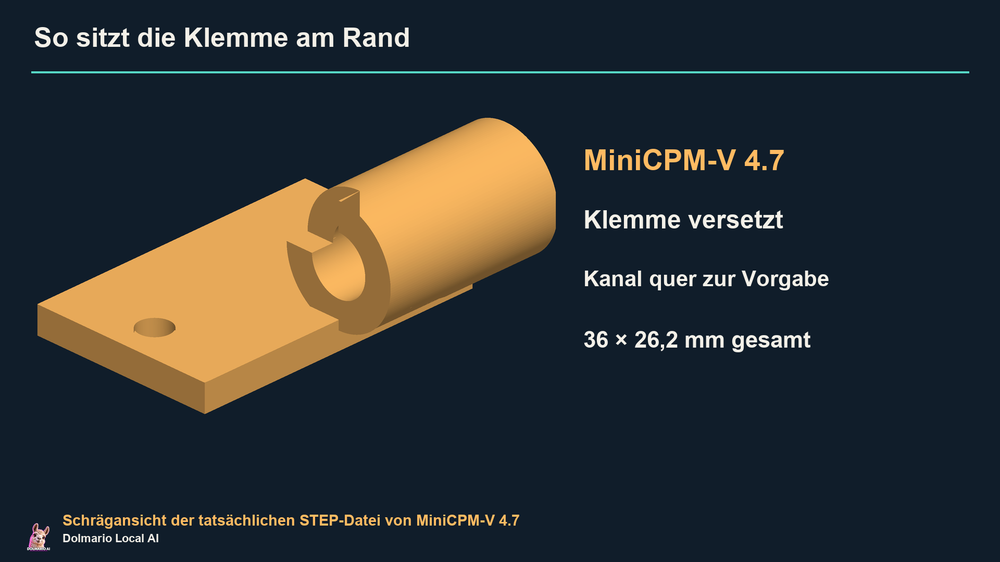

Ein bemaßter Kabelclip zeigt, welche Programme eine prüfbare Zeichnung liefern. Das Gehäuse bringt eine zweite Frage ins Spiel. Bleibt es nach dem Speichern bearbeitbar?
Qwen · Alibaba Cloud
Die lokale 27B-Datei trägt die Unsloth-Quantisierung UD-Q4_K_XL. OpenCode 1, OpenCode 2, Cline Core, Crush und Hermes bauten mit demselben Modell einen geprüften Kabelclip. In den fünf Einzelläufen bestanden die geometrischen Prüfungen, einschließlich der erneut geöffneten FreeCAD-Datei und der STL-Geometrie.
Lokale Datei im ersten gelisteten Versuch · Qwen3.8-27B-UD-Q4_K_XL.gguf
Axion · Axion1-0
Die Forschungsgruppe veröffentlicht unter Axion1-0 einen Reproduktionscheckpoint für wissenschaftliches Schlussfolgern und Werkzeugnutzung. Rund 35 Milliarden Parameter, davon etwa drei Milliarden pro Token aktiv. Unser Q4_K_M-Lauf wiederholte fehlerhafte FreeCAD-Aufrufe und wurde betreut beendet. Es blieb kein prüfbarer Clip.
Lokale Datei im ersten gelisteten Versuch · Axion-1.0-35B.Q4_K_M.gguf
OpenBMB
Das Bild- und Textmodell von OpenBMB hat rund 35 Milliarden Parameter, etwa drei Milliarden sind pro Rechenschritt aktiv. Beim Q4_K_M-Clip sitzt der Klemmbügel am Plattenrand und ragt darüber hinaus. Der Kabelkanal verläuft um 90° zur Sollrichtung. Das ganze Teil misst von oben 36 × 26,2 mm. Für den Fuß waren 32 × 20 mm vorgegeben. Die separat getestete Community-Variante „Uncensored“ wird von Atomic Chat veröffentlicht. Für die lokale Datei AD-Q4_K-IQ4_XS endete die Sitzung regulär, aber das STEP enthielt keinen prüfbaren Volumenkörper, und es gab keine STL. Die beiden Quantisierungen unterscheiden sich. Der Dateiname der lokalen Variante entspricht der Modellkarte, ein Hashabgleich mit ihrer aktuellen Revision liegt nicht vor.
Lokale Datei im ersten gelisteten Versuch · MiniCPM-V-4_7-35B-A3B-Q4_K_M.gguf



Recursive Superintelligence
Das textbasierte Coding-Modell hat 39,8 Milliarden Parameter, davon rund 2,5 Milliarden pro Token aktiv. Im ersten Versuch war das Denklimit vor dem ersten CAD-Aufruf erreicht. Im Folgeversuch passte die Clipgeometrie. Das Protokoll zeigt zugleich, dass Flint die Referenzkonstruktion im Testordner gelesen hatte. Wir stoppten die spätere Werkzeugschleife. Wie gut Flint allein nach dem Maßbrief arbeitet, bleibt offen.
Lokale Datei im ersten gelisteten Versuch · flint-UD-Q4_K_XL.gguf
Thinking Machines Lab
Inkling verarbeitet Text und Bilder. Mittlere Schichten werden mehrfach durchlaufen. Es hat 26,4 Milliarden gespeicherte Parameter. Der Clip bestand auch nach dem gemeinsamen Laufzeit- und Modellupdate. Beim ersten Gehäuse waren beide Größen vor dem Grafikabbruch exportiert. Der nächste Gehäuselauf endete vor dem Export an der Bildübertragung. Im Webversuch entstand die 120-mm-Konstruktion vor dem Grafikabbruch. Wir änderten danach die Längenzelle und exportierten 140 mm auf der CPU. Der Probedruck steht aus.
Lokale Datei im ersten gelisteten Versuch · Inkling-2-Mini-UD-Q4_K_XL.gguf
| Programm | Laufzeit (min:s) |
|---|---|
| OpenCode 1 | 29:59 |
| OpenCode 2 | 29:32 |
| Cline Core | 30:21 |
| Crush | 40:39 |
| Hermes | 61:19 |
Ein Durchlauf je Programm auf demselben 64-GB-EVO-X2. Andere Aufgaben und Computer können andere Zeiten liefern.
Zehn CAD-Dateien. Die native 120-mm-Zeichnung war und die 140-mm-Zeichnung beide gespeichert. Die Windows-Grafikmeldungen kamen anschließend. Beide Gehäusegrößen ließen sich erneut öffnen und vermessen.
Der Clip bestand erneut. Beim Gehäuse kam das Vorschaubild als Text an. Der Lauf endete vor dem ersten fertigen Export. Die spätere Verbindungskontrolle bestätigte die unveränderte Bildübertragung mit vorgegebenen Modellantworten.
Inkling fand das öffentliche Projekt. Nach Hilfe beim Wiederanschließen von FreeCAD speicherte das Modell fünf Dateien für 120 mm. Es brach vor der langen Version ab. Wir öffneten die Zeichnung, setzten A1 auf 140 mm und exportierten beide Teile auf der CPU. Die ZIP-Einstiegsseite verlinkt diese zwei Fassungen.
Der PC hing fest.
Nur für Versuch A liegen Windows-Meldungen mit 0x141 und 0x117 vor. Microsoft bezeichnet sie als Zeitüberschreitungen der Grafikengine bzw. des Grafiktreibers. Die zugrunde liegende Ursache ist offen.